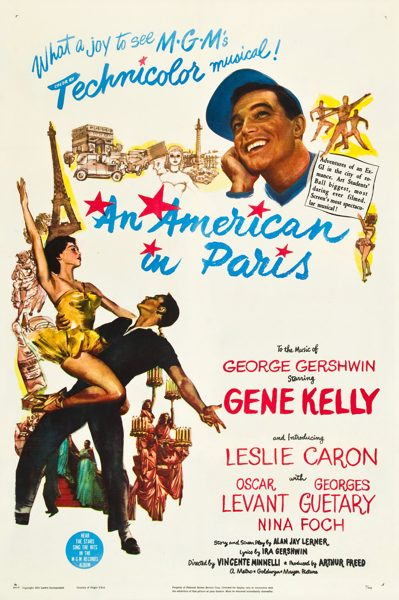

An American in Paris
Starring: Gene Kelly, Leslie Caron, Oscar Levant
Director: Vincente Minnelli
Writer: Alan Jay Lerner
Producer: Arthur Freed, Roger Edens
Studio: Metro-Goldwyn-Mayer
An American in Paris is a 1951 American musical romantic comedy film inspired by the 1928 jazz-influenced symphonic poem (or tone poem) An American in Paris by George Gershwin. Starring Gene Kelly, Leslie Caron (her film debut), Oscar Levant, Georges Guétary, and Nina Foch, the film is set in Paris and was directed by Vincente Minnelli from a script by Alan Jay Lerner.
Trivia
- Won the Academy Award for Best Picture.
- Won the Academy Award for Best Cinematography, Color.
- Won the Academy Award for Best Writing, Original Screenplay.
- Won the Academy Award for Best Costume Design, Color.
- Won the Academy Award for Best Art Direction, Color.
- Won the Academy Award for Best Original Musical Score.
- Selected for the National Board of Review: Top Ten Films.
- Also nominated for: Academy Award for Best Director; Academy Award for Best Film Editing.
- Based on An American in Paris (symphonic tone poem by George Gershwin).
Previous Showings
18 Runs • 8 Festivals
32,419 tickets sold
All runs on record (18):
- June 22 - 26, 1990 · 3,414 ticketsw/ The Band Wagon
- August 24 - 27, 1991 · 2,473 ticketsw/ Gigi
- December 26 - 31, 1992 · 2,872 ticketsw/ Gigi
- May 6 - 7, 1993 · 705 ticketsw/ Going My Way
- September 1 - 2, 1994 · 981 ticketsw/ The Band Wagon
- January 12 - 18, 1996 · 3,322 ticketsw/ Lili
- June 22 - 25, 1996 · 2,277 ticketsw/ Singin' in the Rain
- September 4 - 7, 1999 · 3,022 ticketssummer99w/ Singin' in the Rain
- September 7 - 13, 2002 · 1,315 ticketsw/ On the Town
- November 19 - 20, 2005 · 1,315 ticketsFall2005w/ The Red Shoes
- January 26 - 28, 2007 · 1,562 ticketsw/ Singin' in the Rain
- December 6 - 7, 2009 · 427 tickets20th Anniversary Festivalw/ Father of the Bride
- June 18 - 20, 2011 · 1,174 ticketsMusicalsw/ Daddy Long Legs
- August 11 - 14, 2012 · 2,539 ticketsSummer 2012w/ Singin' in the Rain
- July 4 - 7, 2015 · 1,376 ticketsSummer 2015 Forty Classics from the Golden Age Including Kurosawa in Augustw/ Three Coins in the Fountain
- November 16 - 18, 2018 · 1,388 ticketsGene Kelly Film Festival "Gotta Dance!"w/ The Young Girls of Rochefort ( Les demoiselles de Rochefort )
- October 28 - 30, 2022 · 605 ticketsw/ Gigi
- July 25 - 28, 2024 · 1,652 ticketsDirected by Vincente Minnelliw/ Madame Bovary